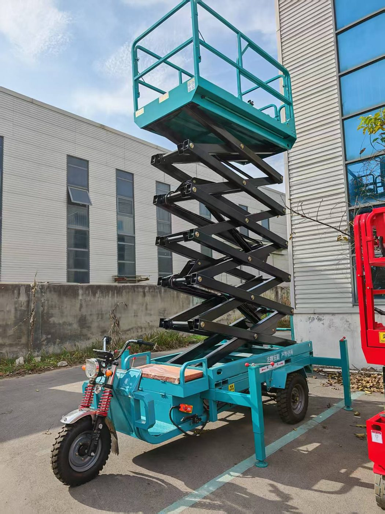

Трёхколёсные подъёмные платформы Longqing SJTR06–SJTR12
Официальный поставщик в России — ООО «ВИРА». Сертификация CE и EAC, гарантия 18 месяцев, отгрузка из Владивостока и доставка по всей России.


Трёхколёсные подъёмные платформы Longqing SJTR — вертикальные подъёмники с колёсным шасси для складов и производственных площадок. Пять моделей закрывают высоты 6–12 м при номинальной грузоподъёмности 300 кг; флагманская SJTR12 поднимает 500 кг. У всех машин есть выдвижная секция платформы (800 мм, у SJTR12 — 900 мм) с дополнительной нагрузкой 100 кг.
Скорость подъёма — 4–6 м/мин, питание — от тяговых аккумуляторных батарей (5×12В/80Ач, у SJTR12 — 6×12В/103Ач), шины пневматические. Рабочая платформа размером 2060×1000 мм (у SJTR12 — 2300×1140 мм) вмещает двух операторов с инструментом. Сертификация CE/EAC, гарантия 18 месяцев, отправка из Владивостока по всей России.
Модельный ряд — 5 моделей
- SJTR06 — высота подъёма 6 м, грузоподъёмность 300 кг, вес 1500 кг
- SJTR08 — высота подъёма 8 м, грузоподъёмность 300 кг, вес 1600 кг
- SJTR10 — высота подъёма 10 м, грузоподъёмность 300 кг, вес 1800 кг
- SJTR11.8 — высота подъёма 11,8 м, грузоподъёмность 300 кг, вес 1900 кг
- SJTR12 — высота подъёма 12 м, грузоподъёмность 500 кг, вес 2230 кг
Особенности и системы безопасности
- Аутригеры 100 мм×50 мм
- Распределительная коробка Delixi
- Двухстороннее управление
- Осевой штифт
- Очистка от ржавчины и нанесение покрытия
- Амортизаторы модели 43
- Положительная четырехотверстная коробка передач 1:12
- Выдвижная платформа
- Гидравлические тормоза
Технические характеристики
Полные заводские параметры по каждой модели серии. Цену и срок поставки уточняйте у ООО «ВИРА» — +7 (423) 256-47-21.
| Модель | SJTR06 | SJTR08 | SJTR10 | SJTR11.8 | SJTR12 |
|---|---|---|---|---|---|
| Максимальная высота подъема | 6 м | 8 м | 10 м | 11,8 м | 12 м |
| Размер платформы | 2060×1000 мм | 2060×1000 мм | 2060×1000 мм | 2070×1000 мм | 2300×1140 мм |
| Выдвижная платформа | 800 мм | 800 мм | 800 мм | 800 мм | 900 мм |
| Грузоподъемность выдвижной платформы | 100 кг | 100 кг | 100 кг | 100 кг | 100 кг |
| Размер рамы | 60×120×2,75 мм | 60×120×2,75 мм | 60×120×2,75 мм | 60×120×2,75 мм | 60×120×2,75 мм |
| Размер рамы из квадратной трубы | 2050×1080 мм | 2050×1080 мм | 2050×1080 мм | 2050×1080 мм | 2300×1090 мм |
| Номинальная грузоподъемность | 300 кг | 300 кг | 300 кг | 300 кг | 500 кг |
| Общие размеры (размер со сложенным ограждением) | 3700×1400×1900 мм | 3700×1400×2020 мм | 3700×1400×2140 мм | 3700×1400×2300 мм | 3920×1580×2100 мм |
| Вес оборудования | 1500 кг | 1600 кг | 1800 кг | 1900 кг | 2230 кг |
| Скорость подъема | 4-6 м/мин | 4-6 м/мин | 4-6 м/мин | 4-6 м/мин | 4-6 м/мин |
| Аккумулятор | 12V80Ah × 5 шт. | 12V80Ah × 5 шт. | 12V80Ah × 5 шт. | 12V80Ah × 5 шт. | 12V103Ah × 6 шт. |
| Шины | 500-12 пневматические | 500-12 пневматические | 500-12 пневматические | 500-12 пневматические | Передние 500-12 Задние 550-13 пневматические |
Частые вопросы о технике Longqing
Какая высота и грузоподъёмность у платформ SJTR?
Высота подъёма — от 6 м (SJTR06) до 12 м (SJTR12): промежуточные модели SJTR08 — 8 м, SJTR10 — 10 м, SJTR11.8 — 11,8 м. Номинальная грузоподъёмность — 300 кг у всех моделей, кроме SJTR12 — 500 кг; выдвижная секция дополнительно держит 100 кг.
От чего питаются трёхколёсные платформы?
От тяговых аккумуляторов: 5 батарей 12В/80Ач у SJTR06–SJTR11.8 и 6 батарей 12В/103Ач у SJTR12. Скорость подъёма — 4–6 м/мин.
Чем SJTR12 отличается от остальных моделей серии?
Грузоподъёмностью 500 кг (вместо 300 кг), увеличенной платформой 2300×1140 мм, задними шинами 550-13 (передние — 500-12) и батареей 6×12В/103Ач. Вес машины — 2230 кг.
Подберём модель под вашу задачу
Расскажите об объекте, высоте и условиях работ — предложим подходящую модель Longqing, рассчитаем доставку из Владивостока в ваш регион.